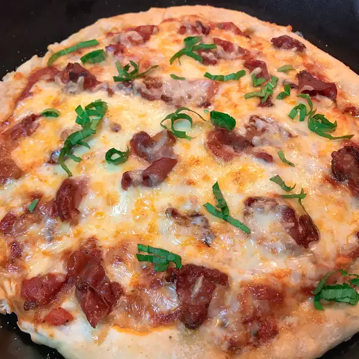

Pizza

Description
The most delicious pizza with prosciutto
Ingredients:
- 2 ounces prosciutto, chopped
- 1 tablespoon olive oil, or as needed
- 1 refrigerated pizza crust
- 1 (6 ounce) can tomato paste
- 3 1/2 tablespoons water
- 1 1/2 teaspoons dried oregano
- 1/2 teaspoon white sugar
- 1 pinch salt
- 2 large cloves garlic, minced
- 1 (8 ounce) package shredded mozzarella cheese
- 8 leaves basil - stacked, rolled into a cigar shape, and thinly sliced
Directions:
- Preheat the oven to 475 degrees F (245 degrees C).
- Place prosciutto in a large skillet and cook over medium-high heat, turning occasionally, until crisp, about 10 minutes. Set aside.
- Lightly oil a pizza pan, baking sheet, or baking stone. Press pizza dough out onto the pan, spreading to the edges, but avoiding pulling the dough apart.
- Combine tomato paste, water, oregano, sugar, and salt in a small bowl. Spread an even layer over the dough. Reserve remaining mixture for use on another pizza. Sprinkle minced garlic over the sauce. Sprinkle 1/2 of the mozzarella on top, then the fried prosciutto, then the rest of the mozzarella cheese. Sprinkle sliced basil leaves over pizza.
- Bake in the preheated oven until cheese and crust are lightly browned, 8 to 10 minutes. Let pizza cool for 3 to 4 minutes, slice, and serve.